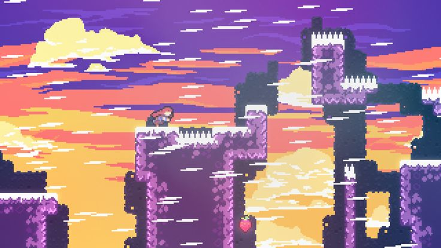
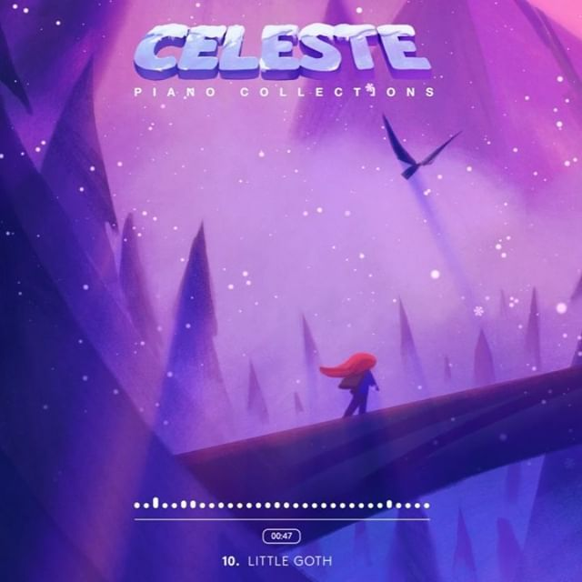
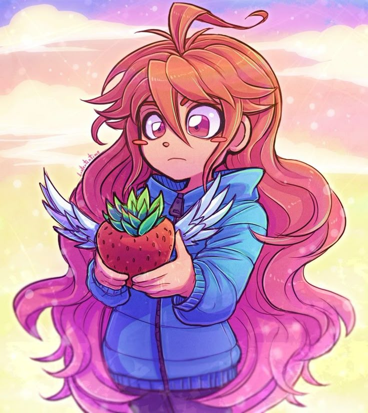

Celeste é um jogo de plataforma desafiador que conta a jornada de Madeline ao escalar a misteriosa Montanha Celeste, enfrentando seus próprios limites e medos internos.
5 motivos para jogar:
- ⛰️ História profunda e emocionante
- üéÆ Jogabilidade precisa e desafiadora
- üéµ Trilha sonora marcante e envolvente
- üé® Pixel art bel√≠ssima e estilizada
- üí¨ Reflex√µes sobre ansiedade e supera√ß√£o
Galeria:


